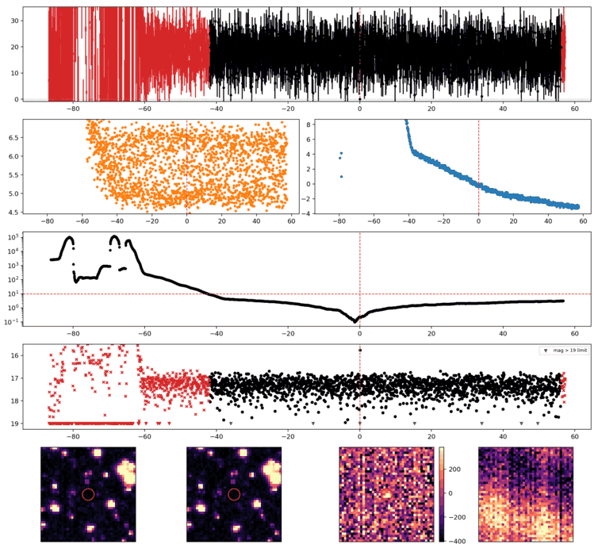
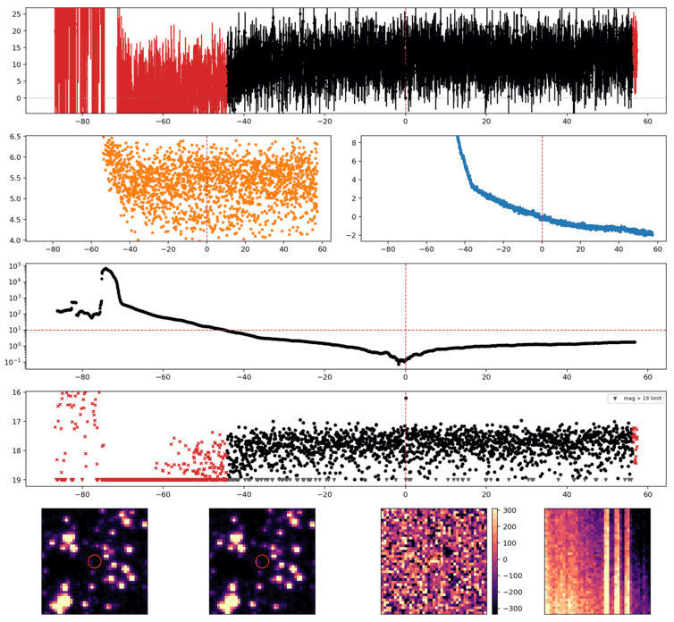
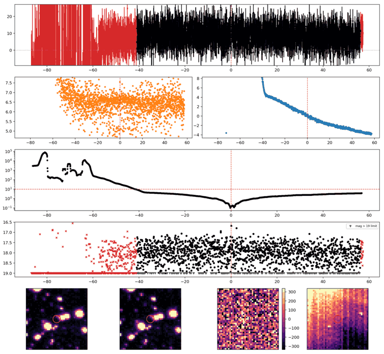
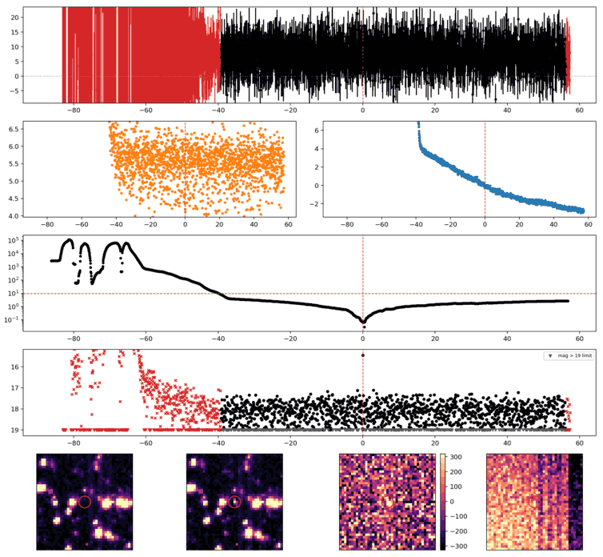
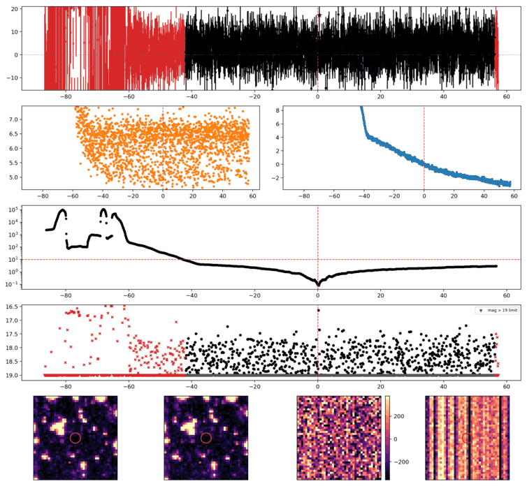
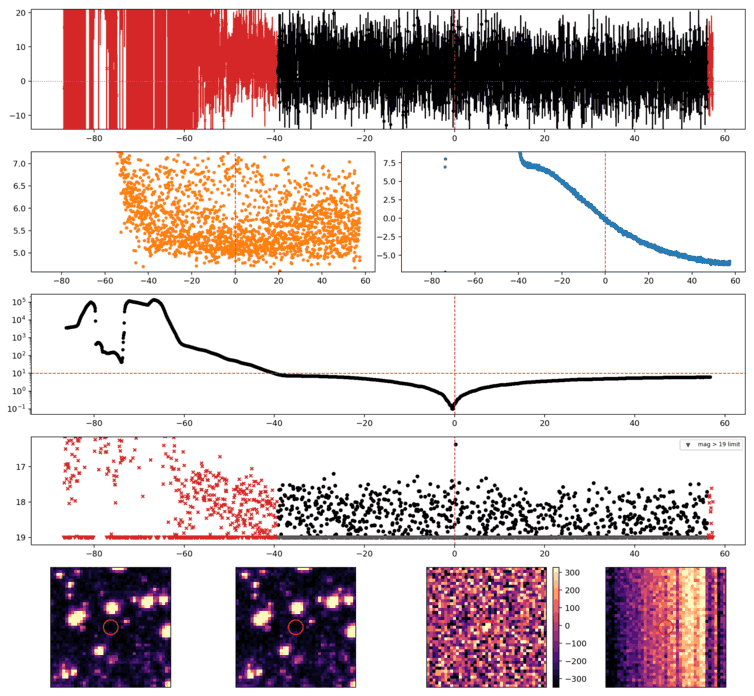
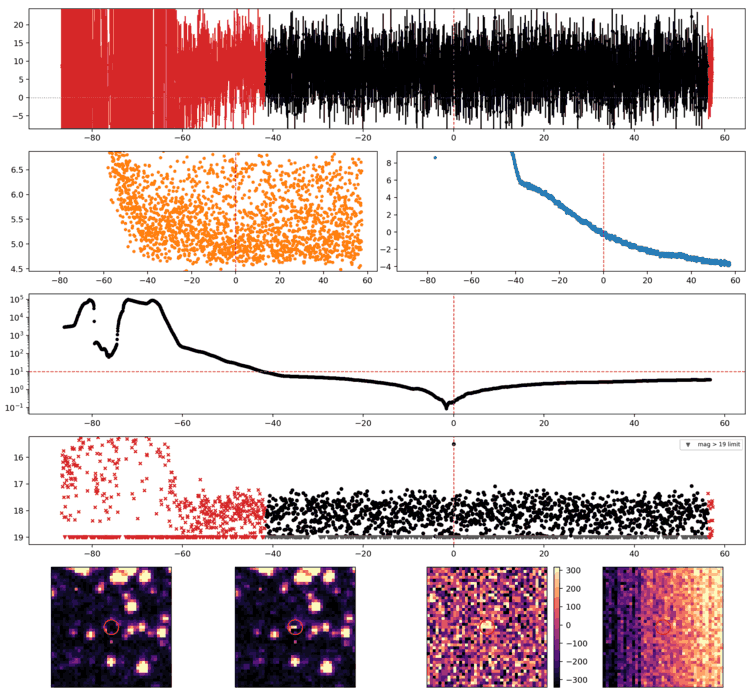
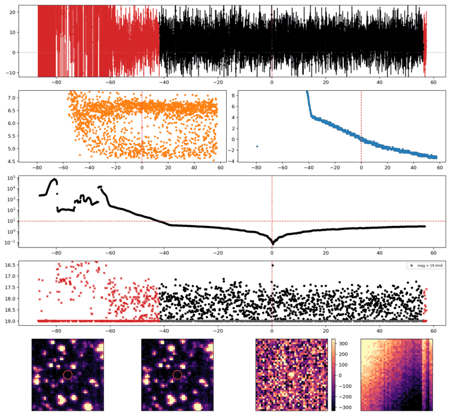
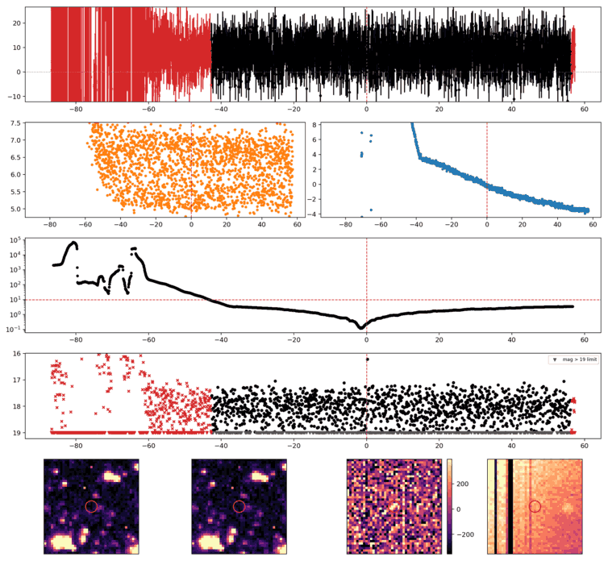
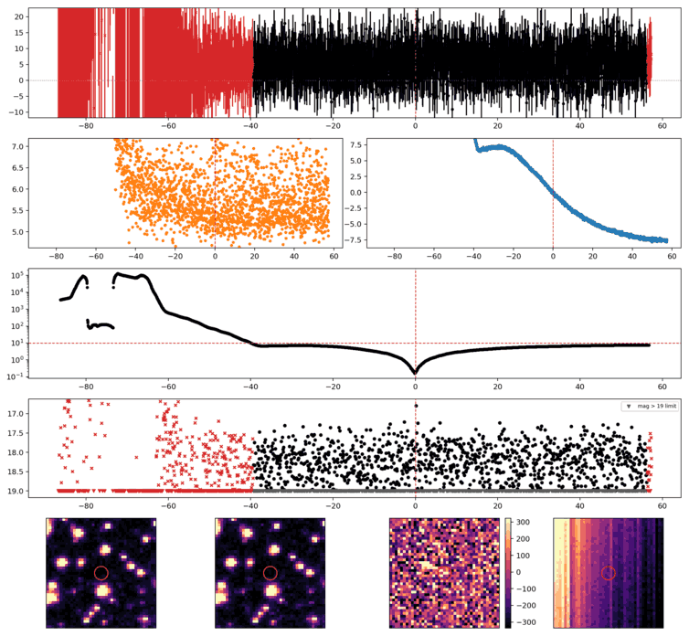

Search centered on refined position (25.7659774, -39.7382265 deg). Gaia coordinates are at J2016.0; proper motions are shown, without epoch propagation. A positional match does not change the candidate flags.
No Gaia DR3 sources found within 5 arcseconds.
Retrieved 2026-10-21T01:59:38.134083+00:00

Search centered on refined position (0.2680000, -47.5467517 deg). Gaia coordinates are at J2016.0; proper motions are shown, without epoch propagation. A positional match does not change the candidate flags.
No Gaia DR3 sources found within 5 arcseconds.
Retrieved 2026-10-21T01:59:38.894606+00:00

Search centered on refined position (22.2568327, -34.2054656 deg). Gaia coordinates are at J2016.0; proper motions are shown, without epoch propagation. A positional match does not change the candidate flags.
No Gaia DR3 sources found within 5 arcseconds.
Retrieved 2026-10-21T01:59:39.642142+00:00

Search centered on refined position (15.4374105, -44.5084609 deg). Gaia coordinates are at J2016.0; proper motions are shown, without epoch propagation. A positional match does not change the candidate flags.
No Gaia DR3 sources found within 5 arcseconds.
Retrieved 2026-10-21T01:59:40.387209+00:00

Search centered on refined position (23.9792383, -38.1659639 deg). Gaia coordinates are at J2016.0; proper motions are shown, without epoch propagation. A positional match does not change the candidate flags.
No Gaia DR3 sources found within 5 arcseconds.
Retrieved 2026-10-21T01:59:41.142808+00:00

Search centered on refined position (34.4539702, -42.2516717 deg). Gaia coordinates are at J2016.0; proper motions are shown, without epoch propagation. A positional match does not change the candidate flags.
No Gaia DR3 sources found within 5 arcseconds.
Retrieved 2026-10-21T01:59:41.890427+00:00

Search centered on refined position (41.1577403, -39.3993595 deg). Gaia coordinates are at J2016.0; proper motions are shown, without epoch propagation. A positional match does not change the candidate flags.
No Gaia DR3 sources found within 5 arcseconds.
Retrieved 2026-10-21T01:59:42.647374+00:00

Search centered on refined position (19.2655372, -33.6443982 deg). Gaia coordinates are at J2016.0; proper motions are shown, without epoch propagation. A positional match does not change the candidate flags.
No Gaia DR3 sources found within 5 arcseconds.
Retrieved 2026-10-21T01:59:43.407971+00:00

Search centered on refined position (19.1381691, -31.7166992 deg). Gaia coordinates are at J2016.0; proper motions are shown, without epoch propagation. A positional match does not change the candidate flags.
No Gaia DR3 sources found within 5 arcseconds.
Retrieved 2026-10-21T01:59:44.156813+00:00

Search centered on refined position (34.9084511, -44.5392909 deg). Gaia coordinates are at J2016.0; proper motions are shown, without epoch propagation. A positional match does not change the candidate flags.
No Gaia DR3 sources found within 5 arcseconds.
Retrieved 2026-10-21T01:59:44.902295+00:00